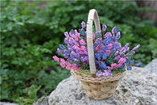
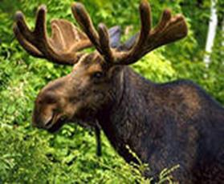
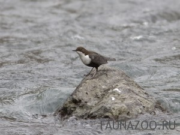

Главный символ – цветок вереска пурпурного. Вереск растет по всей Норвегии: его цветы можно увидеть повсюду - и на побережье, и в долинах, и высоко в горах.
Другой символ – это представитель животного мира – лось. Это самое крупное и наиболее распространенное в Норвегии животное. Сувениры с его изображением можно увидеть везде, как и троллей с викингами.
Третий символ Норвегии – это птица – оляпка. Эту маленькую птичку называют еще водяным воробышком из-за ее обитания около водоемов. Птичка может нырять в реки и водопады, разыскивая насекомых, находиться под водой целую минуту и гулять по дну.